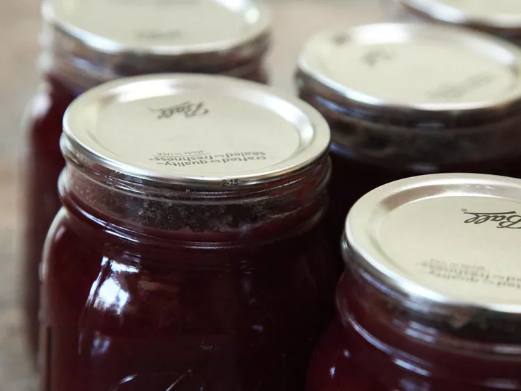

.png)

Updated 3st July, 2022
When I lived in the city, I got my fruit from the farmers' market or the supermarket in easy-to-manage batches. If I was going to make jam, I had to plan on making jam in advance. This summer I made jam because, aside from letting the fruit rot on the ground, I literally had no other choice.
I gave away as many plums as I possibly could to neighbors. I packed bags of them and brought them on road trips. I ate plums three meals a day. I even fed plums to the dogs (don't worry, not the pits). It wasn't enough. Over the course of the three weeks during which the tree was bearing ripe fruit, I picked over 80 pounds of plums. That's a lot of plums.
For refrigerator jam, skip the lemon juice. Since plums vary in acidity, most plum jam recipes call for lemon juice to ensure safety (as well as for flavor balance). After trying jam with lemon juice and jam without, side by side, in various quantities, I've found that even a small amount distracts from the fresh plum flavor. So, if you do not plan to can your plum jam for long-term storage, I recommend skipping the lemon.
Once all the floury bits have been absorbed, plop the dough onto a well-floured surface and sprinkle more flour on top. Seriously, have at it! Any excess flour can be brushed off later on, so there's absolutely no reason to scrape by with the bare minimum. Use as much flour as you need to feel 100% confident as you roll.
HUỲNH TUYỀN